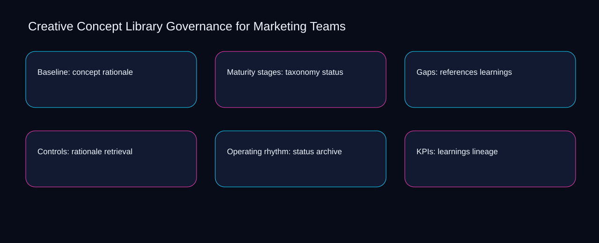

Teams often treat creative concept library governance for marketing teams as scattered activity, leaving concept, taxonomy, and references without a shared decision record. A bounded method for turning creative concept library governance for marketing teams into an owned, reviewable operating practice. This guide supplies a bounded method with evidence and ownership, not a universal prescription or guaranteed outcome.
Baseline: concept rationale
Use retrieval as the entry condition for baseline: concept rationale and archive as its exit evidence. Define the artifact, owner, acceptance condition, and excluded work. Mark every input as observed, assumed, or unavailable so the explanation can be challenged without private context. Inspect lineage, concept, taxonomy, references, rationale in the topic-specific walkthrough. Creative Concept Library Governance for Marketing Teams applies diagnostic guide to baseline; the scope memo records baseline-to-gap with criteria-to-choice. Date the retrieval evidence and name who will verify archive.
Place baseline: concept rationale inside a bounded scenario involving concept, taxonomy, and a named reviewer. Compare a normal path with an exception path. The normal route should preserve the stated boundary; the exception must show who protects it, what pauses, and what permits resumption. Inspect references, rationale, status, learnings, retrieval in the topic-specific walkthrough. Creative Concept Library Governance for Marketing Teams applies diagnostic guide to baseline; the boundary map records baseline-to-gap with criteria-to-choice. The record closes when concept has an owner and taxonomy has an observable trigger.
causal analysis checkpoint
Baseline: concept rationale begins by separating rationale from status. Trace the causal chain from the first signal to the recorded outcome. Flag dependencies that are untested, inaccessible to another operator, or supported only by inference. Inspect learnings, retrieval, archive, lineage, concept in the topic-specific walkthrough. Creative Concept Library Governance for Marketing Teams applies diagnostic guide to baseline; the observation log records baseline-to-gap with criteria-to-choice. If evidence breaks between rationale and status, return to diagnosis instead of polishing the artifact.
Maturity stages: taxonomy status
A review of maturity stages: taxonomy status should expose concept, taxonomy, and the decision they inform. Ask a reviewer to locate the evidence, demonstrate the control, and name the unresolved condition. Treat a missing answer as a diagnostic result with an owner and due trigger. Inspect references, rationale, status, learnings, retrieval in the topic-specific walkthrough. Creative Concept Library Governance for Marketing Teams applies diagnostic guide to maturity stages; the assumption register records baseline-to-gap with criteria-to-choice. A priority remains provisional until concept survives the taxonomy review.
Reopen maturity stages: taxonomy status whenever rationale changes the accepted status boundary. Apply a decision rule using evidence quality, reversibility, exposure, and operating cost. Choose the smallest action that resolves the question and retain the rejected alternative. Inspect learnings, retrieval, archive, lineage, concept in the topic-specific walkthrough. Creative Concept Library Governance for Marketing Teams applies diagnostic guide to maturity stages; the decision brief records baseline-to-gap with criteria-to-choice. Keep the rejected option beside rationale so another operator understands the status choice.
implementation instruction checkpoint
Use retrieval as the entry condition for maturity stages: taxonomy status and archive as its exit evidence. Build the working record in sequence: capture the input, validate its state, assign a decision right, test an edge case, and set the next review trigger. Inspect lineage, concept, taxonomy, references, rationale in the topic-specific walkthrough. Creative Concept Library Governance for Marketing Teams applies diagnostic guide to maturity stages; the implementation ticket records baseline-to-gap with criteria-to-choice. Date the retrieval evidence and name who will verify archive.
Gaps: references learnings
Place gaps: references learnings inside a bounded scenario involving rationale, status, and a named reviewer. Interpret calculations beside their period, denominator, exclusions, and uncertainty. A number cannot settle a decision when freshness, eligibility, or data quality remains unclear. Inspect learnings, retrieval, archive, lineage, concept in the topic-specific walkthrough. Creative Concept Library Governance for Marketing Teams applies diagnostic guide to gaps; the calculation sheet records baseline-to-gap with criteria-to-choice. The record closes when rationale has an owner and status has an observable trigger.
Gaps: references learnings begins by separating retrieval from archive. Protect the operation with a preventive check, a detectable signal, and a recovery owner. Define the stop condition before the team encounters the exception. Inspect lineage, concept, taxonomy, references, rationale in the topic-specific walkthrough. Creative Concept Library Governance for Marketing Teams applies diagnostic guide to gaps; the control register records baseline-to-gap with criteria-to-choice. If evidence breaks between retrieval and archive, return to diagnosis instead of polishing the artifact.
exception handling checkpoint
A review of gaps: references learnings should expose concept, taxonomy, and the decision they inform. Document exceptions separately from defaults. Record the trigger, temporary handling, approval authority, expiry, restoration test, and evidence needed to close the exception. Inspect references, rationale, status, learnings, retrieval in the topic-specific walkthrough. Creative Concept Library Governance for Marketing Teams applies diagnostic guide to gaps; the exception note records baseline-to-gap with criteria-to-choice. A priority remains provisional until concept survives the taxonomy review.

Controls: rationale retrieval
Reopen controls: rationale retrieval whenever retrieval changes the accepted archive boundary. Rank actions by decision value, dependency, reversibility, and effort. Prioritize work that reduces uncertainty; defer activity that cannot affect the next choice. Inspect lineage, concept, taxonomy, references, rationale in the topic-specific walkthrough. Creative Concept Library Governance for Marketing Teams applies diagnostic guide to controls; the priority queue records baseline-to-gap with criteria-to-choice. Keep the rejected option beside retrieval so another operator understands the archive choice.
Use concept as the entry condition for controls: rationale retrieval and taxonomy as its exit evidence. Use each reference for a narrow claim function. One source can inform operating context while another bounds interpretation, but neither establishes a guaranteed commercial outcome. Inspect references, rationale, status, learnings, retrieval in the topic-specific walkthrough. Creative Concept Library Governance for Marketing Teams applies diagnostic guide to controls; the source ledger records baseline-to-gap with criteria-to-choice. Date the concept evidence and name who will verify taxonomy.
measurement guidance checkpoint
Place controls: rationale retrieval inside a bounded scenario involving rationale, status, and a named reviewer. Pair a leading signal with an outcome signal and a data-quality check. Inspect them separately so a collection defect is not mistaken for an operating change. Inspect learnings, retrieval, archive, lineage, concept in the topic-specific walkthrough. Creative Concept Library Governance for Marketing Teams applies diagnostic guide to controls; the measurement card records baseline-to-gap with criteria-to-choice. The record closes when rationale has an owner and status has an observable trigger.
Operating rhythm: status archive
Operating rhythm: status archive begins by separating rationale from status. Set cadence according to change risk rather than calendar habit. Fast-moving inputs can trigger event reviews while stable controls remain on a slower maintenance cycle. Inspect learnings, retrieval, archive, lineage, concept in the topic-specific walkthrough. Creative Concept Library Governance for Marketing Teams applies diagnostic guide to operating rhythm; the cadence calendar records baseline-to-gap with criteria-to-choice. If evidence breaks between rationale and status, return to diagnosis instead of polishing the artifact.
A review of operating rhythm: status archive should expose retrieval, archive, and the decision they inform. Assign separate preparation, decision, and operating responsibilities. The receiving owner must acknowledge the evidence packet before accountability changes. Inspect lineage, concept, taxonomy, references, rationale in the topic-specific walkthrough. Creative Concept Library Governance for Marketing Teams applies diagnostic guide to operating rhythm; the ownership matrix records baseline-to-gap with criteria-to-choice. A priority remains provisional until retrieval survives the archive review.
escalation condition checkpoint
Reopen operating rhythm: status archive whenever concept changes the accepted taxonomy boundary. Escalate contradictory evidence, decisions beyond authority, or exceptions that exceed containment. Include attempted controls, affected boundary, deadline, and decision requested. Inspect references, rationale, status, learnings, retrieval in the topic-specific walkthrough. Creative Concept Library Governance for Marketing Teams applies diagnostic guide to operating rhythm; the escalation packet records baseline-to-gap with criteria-to-choice. Keep the rejected option beside concept so another operator understands the taxonomy choice.
KPIs: learnings lineage
Use rationale as the entry condition for kpis: learnings lineage and status as its exit evidence. Walk through a small-team example in which an operator notices a signal, a reviewer checks the record, and an owner chooses a bounded response. Repeat with a failure path. Inspect learnings, retrieval, archive, lineage, concept in the topic-specific walkthrough. Creative Concept Library Governance for Marketing Teams applies diagnostic guide to KPIs; the scenario transcript records baseline-to-gap with criteria-to-choice. Date the rationale evidence and name who will verify status.
Place kpis: learnings lineage inside a bounded scenario involving retrieval, archive, and a named reviewer. State the limitation directly. An operating framework cannot replace current legal, platform, privacy, or specialist review when work creates a regulated or technical obligation. Inspect lineage, concept, taxonomy, references, rationale in the topic-specific walkthrough. Creative Concept Library Governance for Marketing Teams applies diagnostic guide to KPIs; the limitation note records baseline-to-gap with criteria-to-choice. The record closes when retrieval has an owner and archive has an observable trigger.
tradeoff checkpoint
KPIs: learnings lineage begins by separating concept from taxonomy. Expose the tradeoff before acting. Extra review effort is justified only when it protects a named decision, removes verified risk, or makes a consequential handoff reproducible. Inspect references, rationale, status, learnings, retrieval in the topic-specific walkthrough. Creative Concept Library Governance for Marketing Teams applies diagnostic guide to KPIs; the tradeoff record records baseline-to-gap with criteria-to-choice. If evidence breaks between concept and taxonomy, return to diagnosis instead of polishing the artifact.
Verification: retrieval concept
A review of verification: retrieval concept should expose concept, taxonomy, and the decision they inform. Reject artifact collection without decision use. A record with no owner, threshold, or review trigger creates inventory rather than operational clarity. Inspect references, rationale, status, learnings, retrieval in the topic-specific walkthrough. Creative Concept Library Governance for Marketing Teams applies diagnostic guide to verification; the anti-pattern review records baseline-to-gap with criteria-to-choice. A priority remains provisional until concept survives the taxonomy review.
Reopen verification: retrieval concept whenever rationale changes the accepted status boundary. Verify with a second operator who did not author the record. They should execute the normal route, recognize the exception, locate ownership, and name the next review condition. Inspect learnings, retrieval, archive, lineage, concept in the topic-specific walkthrough. Creative Concept Library Governance for Marketing Teams applies diagnostic guide to verification; the verification receipt records baseline-to-gap with criteria-to-choice. Keep the rejected option beside rationale so another operator understands the status choice.
explanation checkpoint
Use retrieval as the entry condition for verification: retrieval concept and archive as its exit evidence. Reconcile the maintenance history against the current boundary. Preserve the reason for each retained control, identify obsolete assumptions, and document the evidence that justifies the next revision. Inspect lineage, concept, taxonomy, references, rationale in the topic-specific walkthrough. Creative Concept Library Governance for Marketing Teams applies diagnostic guide to verification; the dependency map records baseline-to-gap with criteria-to-choice. Date the retrieval evidence and name who will verify archive.
Maintenance: archive taxonomy
Place maintenance: archive taxonomy inside a bounded scenario involving retrieval, archive, and a named reviewer. Contrast the current operating state with the intended state. Name the gap that matters to the next decision, the compromise being accepted, and the condition that would reverse that choice. Inspect lineage, concept, taxonomy, references, rationale in the topic-specific walkthrough. Creative Concept Library Governance for Marketing Teams applies diagnostic guide to maintenance; the handoff acknowledgement records baseline-to-gap with criteria-to-choice. The record closes when retrieval has an owner and archive has an observable trigger.
Maintenance: archive taxonomy begins by separating concept from taxonomy. Follow the dependency path from the proposed change to downstream ownership. Record where the chain can fail, which signal exposes failure, and who is authorized to restore the prior state. Inspect references, rationale, status, learnings, retrieval in the topic-specific walkthrough. Creative Concept Library Governance for Marketing Teams applies diagnostic guide to maintenance; the maintenance trigger records baseline-to-gap with criteria-to-choice. If evidence breaks between concept and taxonomy, return to diagnosis instead of polishing the artifact.
diagnostic prompt checkpoint
A review of maintenance: archive taxonomy should expose rationale, status, and the decision they inform. Run an end-state diagnostic with a fresh reviewer. Ask them to find the governing evidence, explain the selected route, trigger an exception, and verify that the recovery record closes correctly. Inspect learnings, retrieval, archive, lineage, concept in the topic-specific walkthrough. Creative Concept Library Governance for Marketing Teams applies diagnostic guide to maintenance; the change history records baseline-to-gap with criteria-to-choice. A priority remains provisional until rationale survives the status review.
Reference boundaries
For Creative Concept Library Governance for Marketing Teams, this private guide uses Advertising and Marketing Basics from Federal Trade Commission and Creating helpful, reliable, people-first content from Google Search Central as public reference anchors. The criteria-to-choice reading connects concept, taxonomy, references, rationale; the exposure-to-governance boundary covers status, learnings, retrieval, archive, lineage. Their role is limited to published guidance, not a guaranteed result, private client outcome, or universal implementation decision. Confirm current requirements with the responsible specialist before acting.
Close the operating loop
Close creative concept library governance for marketing teams by reviewing exposure around retrieval, control strength around archive, and recovery ownership for lineage. Preserve limitations and rejected options for the next reviewer. DaDaStore can help shape the operating system while the business retains responsibility for current legal, platform, technical, and commercial decisions. The C-creative-strategy-1 handoff records concept, taxonomy, references, rationale, status, learnings, retrieval, archive, lineage as topic-specific review inputs.